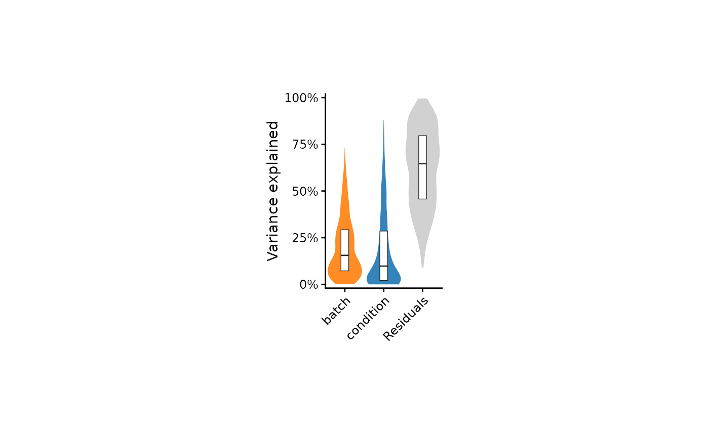
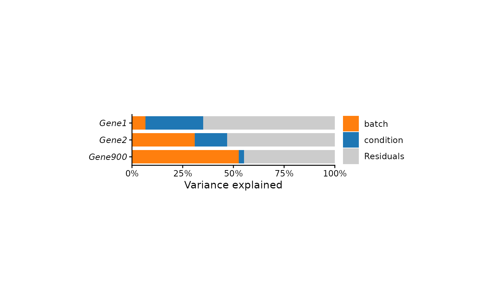
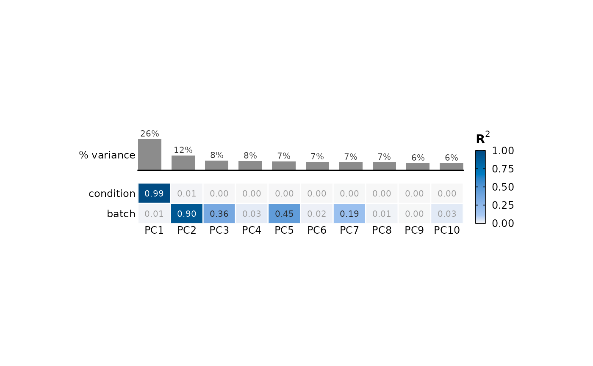

Shows how much of the variation in a dataset each sample covariate (condition, batch, sex, library size, ...) explains, in one of two views:
- "genes"
The share of each feature's variance explained by each covariate: one violin (with a box of the quartiles and median) per covariate, ordered by median, Residuals last; or, for a few `features`, stacked bars. From the result of
variancePartition::fitExtractVarPartModel(), or computed here with linear models (see Details).- "pcs"
The R-squared of each of the top PCs regressed on each covariate, as tiles under bars of each PC's % variance: which covariates drive the main axes of variation.
Fixed sizes; save it with save_plot; the values
behind it are returned by export_source_data.
Usage
plot_variance_explained(
x,
metadata = NULL,
covariates = NULL,
view = c("genes", "pcs"),
n.top = NULL,
n.pcs = 10,
features = NULL,
cols = NULL,
italic.genes = TRUE,
cell.width = 0.4,
cell.height = 0.25,
panel.width = 3,
panel.height = 2,
legend.position = "right",
bg = "transparent"
)Arguments
- x
A normalized features x samples matrix or data frame (e.g. vst, logCPM), sample names as column names; or, for view "genes", a variancePartition result (features x components, with a `Residuals` column); or, for view "pcs", a
prcompresult- metadata
Data frame of sample covariates, sample names as row names. Not needed for a variancePartition result
- covariates
Columns of `metadata` to use. If NULL (default), all
- view
"genes" (default) or "pcs"
- n.top
Number of most variable features used from a matrix. If NULL (default): all features for view "genes", 500 for view "pcs" (as
plot_pca)- n.pcs
View "pcs": number of PCs, default 10
- features
View "genes": features to draw as stacked bars instead of violins (e.g. a few genes of interest). Default is NULL
- cols
Colours of the covariates: NULL (default; "scanpy-20"), a qualitative palette name, or colours named by covariate (Residuals are always grey). For view "pcs", the colours of the R-squared scale: NULL (default; "seq-blue"), a palette name or colours from low to high
- italic.genes
Whether feature names (stacked bars) are gene names, set in italics. Default is TRUE
- cell.width
Width of one violin (view "genes") or one PC column (view "pcs") in inches, default 0.4
- cell.height
Height of one bar (stacked bars) or one covariate row (view "pcs") in inches, default 0.25
- panel.width
Length of the stacked bars in inches, default 3
- panel.height
Height of the violins in inches, default 2
- legend.position
Position of the legend (stacked bars and view "pcs"), default "right"
- bg
Background colour, default is "transparent"
Details
Built-in fractions (view "genes" from a matrix). For each feature,
a linear model of its values on all covariates is fitted (numeric
covariates as they are, others as factors), and its R-squared is split
between the covariates by the LMG method (Lindeman, Merenda & Gold 1980;
as relaimpo::calc.relimp(type = "lmg"), Groemping 2006): a
covariate's fraction is its increase in R-squared when added to the
model, averaged over all orders in which the covariates can be added.
Residuals is 1 - R-squared, so the fractions of a feature sum to 1, as
variancePartition's, and do not depend on the order of `covariates`.
Variance shared by correlated covariates (e.g. a batch partly confounded
with condition) is split between them; fully confounded covariates
cannot be separated and give an error. This is an approximation of
variancePartition: fixed effects only. With few samples, a covariate
with many levels is overfitted; use variancePartition, with such
covariates as random effects, for those designs. At most 8 covariates.
View "pcs". Each PC's scores are regressed on each covariate separately (R-squared of a one-covariate linear model; for a factor, the share of the PC's variance between its levels). The source data also hold the F-test p-value and its Benjamini-Hochberg adjustment over all tiles; with few samples they are rough.
Examples
set.seed(1)
m <- matrix(rnorm(1000 * 12, mean = 6), nrow = 1000,
dimnames = list(paste0("Gene", 1:1000), paste0("S", 1:12)))
meta <- data.frame(condition = rep(c("WT", "KO"), each = 6),
batch = rep(c("A", "B", "C"), 4),
row.names = colnames(m))
m[1:300, meta$condition == "KO"] <- m[1:300, meta$condition == "KO"] + 1.5
m[, meta$batch == "B"] <- m[, meta$batch == "B"] + rnorm(1000, sd = 0.5)
plot_variance_explained(m, meta)

plot_variance_explained(m, meta, features = c("Gene1", "Gene2", "Gene900"))

plot_variance_explained(m, meta, view = "pcs")
#> PCA of 500 features x 12 samples
